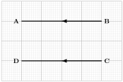
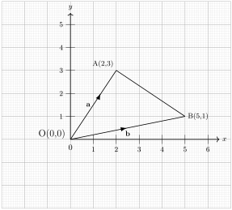
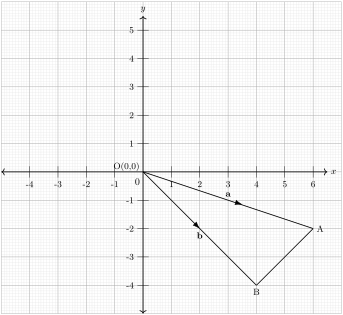
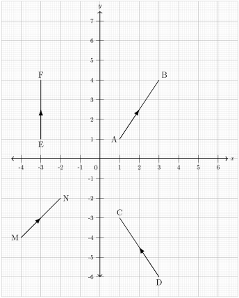
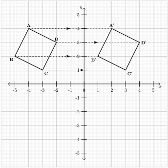

Vectors are an essential concept in mathematics that extend beyond just numbers. Suppose I ask you, "How far is your home from school?" You might respond with "\(2\) kilometers." However, this information alone is not enough for me to get to your home. To reach your destination, I would also need to know the direction, whether it is east, west, northeast, or south. This combination of both distance and direction is what a vector represents.
Pilots rely on vectors to determine the direction and distance they need to travel from one location to another. In this topic, we will explore how to use vectors and perform various operations on them.
Subsection2.8.1Vectors and Scalar Quantities
Activity2.8.1.
Work in groups
(a)
Identify and list at least five examples of quantities that have both magnitude and direction.
(b)
Identify and list at least five examples of quantities that have only magnitude.
(c)
Discuss how these quantities are used in real life scenarios.
(d)
Discuss and share your findings with the rest of the class.
A vector is a quantity that has both magnitude and direction, whereas a scalar is a quantity which has only magnitude.
Examples of vector quantities include force, velocity, and displacement, while scalar quantities include mass,temperature, and speed etc.
Table2.8.1.Difference Between Vector and Scalar Quantities
Feature
Vector Quantity
Scalar Quantity
Definition
Has both magnitude and direction
Has only magnitude
Examples
Force,Acceleration,Displacement
Distance,Temperature,Mass
Subsection2.8.2Vector Notation
Vector notation is a way of representing quanties that have both magnitude and direction in mathematics. In Figure 2.8.2 below, we can represent a vector from a point \(A\) to point \(B\) as \(\overrightarrow{AB} = \mathbf{a} = \underset{\sim}{\mathbf{a}}\)
Similarly, if the direction of the vector is reversed, from point \(B\) to point \(A\) the vector is represented as \(\overrightarrow{BA} = \mathbf{-a} = -\underset{\sim}{\mathbf{a}}\)
Figure2.8.2.
Subsection2.8.3Representation of Vectors
We can represent a vector by a line drawn between two points as shown in Figure 2.8.3 below:
Figure2.8.3.
In Figure 2.8.3, the direction of the vector is indicated by an arrow pointing to the right, while its magnitude is determined by the length of \(PQ\text{.}\)
A vector \(PQ\) can be denoted as \(\underset{\sim}{PQ}\) or \(\vec{PQ}\text{.}\)The magnitude of vector \(PQ\) is represented as \(|PQ|\text{.}\) In this case, we refer to \(P\) as initial point and \(Q\) as the terminal point
Additionally, a vector can also be represented using a single small letter,such as \(\mathbf{a}\) or \(\underset{\sim}{\mathbf{a}}\text{.}\)
Subsection2.8.4Equivalent Vectors
Activity2.8.2.
Work in groups
(a)
Draw the \(x\) axis and \(y\) axis on your graph paper.
(b)
Plot the points \(A(0,4), B(3,4), C(0,2)\) and \(D(3,2)\text{.}\)
(c)
Draw a line to connect point \(A\) and \(B,\) add an arrow pointing to point \(B.\)
(d)
Draw a line to connect point \(C\) and \(D,\) add an arrow pointing to point \(D.\)
(e)
What similarities does vector \(AB\) and vector \(CD\) have in common?
(f)
What is the name given to vectors \(AB\) and \(CD\text{?}\)
(g)
Discuss and share your findings with the rest of the class.
Two or more vectors are said to be equivalent if they satisfy the following conditions:
They have same magnitude.
They point in the same direction.
Figure2.8.4.
In Figure 2.8.4, \(MN = PQ\) since they have same direction and equal magnitude.
Example2.8.5.
Using Figure 2.8.6, determine whether vectors \(\mathbf{AB}\) and \(\mathbf{DC}\) are equivalent.

Figure2.8.6.
Solution.
The vectors \(\mathbf{AB} \text{ and } \mathbf{DC}\) are equivalent because they have the same magnitude, \(|\mathbf{AB}| = |\mathbf{DC}| \text{,}\) and they point in the same direction
ExercisesExercises
1.
Is it possible for two vectors to have the same direction but not be equivalent? Explain your answer.
2.
In Figure 2.8.7, identify pairs of equivalent vectors and non-equivalent vectors.
Figure2.8.7.
Subsection2.8.5Adding Vectors in Different Situations
Activity2.8.3.
Work in groups
(a)
Draw the \(x\) axis and \(y\) axis on your graph paper.
(b)
Draw vector \(\overrightarrow{AB}\) from point \(A(0,0)\) to point \(B(2,2)\text{.}\)
(c)
Draw vector \(\overrightarrow{BC}\) from point \(B(2,2)\) to point \(C(5,2)\text{.}\)
(d)
Count the number of units moved horizontally (along the \(x\) axis) from the starting point \(A\) to the final point \(C\text{.}\)
(e)
Similarly, count the number of units moved vertically (along the y-axis) from point \(A\) to point \(C\text{.}\)
(f)
Write the resultant displacement in coordinate form \(\begin{pmatrix} x \\ y \end{pmatrix}\text{,}\) where \(x\) represents displacement along the \(x\) axis and \(y\) represents displacement along the \(y\) axis.
(g)
Discuss and share your findings with the rest of the class.
Consider a displacement from point \(\mathbf{P}\) to point \(\mathbf{N}\text{,}\) followed by another displacement from point \(\mathbf{N}\) to point \(\mathbf{Q}\text{.}\) The total resultant displacement from \(\mathbf{P}\) to \(\mathbf{Q}\) is obtained by adding the two vectors sequentially.
\(\mathbf{PQNM}\) is a square with vectors \(\mathbf{PQ}\) and \(\mathbf{QN}\) given as \(\mathbf{a} \text{ and } \mathbf{b}\) respectively, as shown in Figure 2.8.12 . Express the \(\mathbf{PN}\) and \(\mathbf{MQ}\) vectors in terms of \(\mathbf{a}\) and \(\mathbf{b}\)
Name pairs of vectors with equal magnitude but opposite directions.
illustrate the sums of the following vectors graphically:
\(\displaystyle \mathbf{e} + \mathbf{d}\)
\(\displaystyle \mathbf{f} + \mathbf{g}\)
\(\displaystyle \mathbf{b} + \mathbf{d}\)
\(\displaystyle \mathbf{g} + \mathbf{h}\)
Subsection2.8.6Multiplication of Vector by a Scalar
Activity2.8.4.
Work in groups
(a)
On a graph paper, draw the \(x\) axis and \(y\) axis.
(b)
Draw a directed line passing through point \(A(0,2)\) and \(B(2,2)\text{,}\) and label it as vector \(\overrightarrow{AB}\text{.}\)
(c)
From point \(B(2,2)\text{,}\) draw another directed line to point \(C(4,2)\text{,}\) and label it as vector \(\overrightarrow{BC}\text{.}\)
(d)
Determine the coordinate representations of \(\overrightarrow{AB}\) and \(\overrightarrow{AC}\text{..}\)
(e)
How does \(\overrightarrow{AB}\) relate to \(\overrightarrow{AC}\text{?}\)
(f)
Discuss and share your findings with the rest of the class.
Positive Scalar
In Figure 2.8.14, the vector \(PQ\) is represented as \(\mathbf{a}\text{.}\) When we multiply \(\mathbf{a}\) by a positive scalar, say \(2\text{,}\) the length of the vector doubles, making it \(\mathbf{2a}\text{.}\) The direction of the vector remains unchanged, but its magnitude increases.
Figure2.8.14.
In Figure 2.8.15, the vector \(\mathbf{PN}\) is given by: \(\mathbf{PN} = \mathbf{a} + \mathbf{a} = 2\mathbf{a}\text{.}\) This means \(\mathbf{PN}\) has the same direction as \(\mathbf{PN}\text{,}\) and its magnitude twice that of \(\mathbf{PQ}.\)
Figure2.8.15.
Negative Scalar
Consider the vector \(\mathbf{PQ}\text{,}\)denoted as \(\mathbf{a}\text{,}\) in Figure 2.8.16 The vector points to the right and has a magnitude of \(\mathbf{a}\text{.}\)
Figure2.8.16.
In Figure 2.8.17, the vector \(\mathbf{PN}\) is obtained by multiplying \(\mathbf{PQ}\) by \(-2\text{,}\) giving:
This means that PN has twice the magnitude of \(\mathbf{PQ}\text{,}\) but its direction is reversed.
Figure2.8.17.
Multiplying a vector by a negative scalar reverses its direction, making it point in the opposite direction.
Zero Scalar
When a vector \(\mathbf{a}\text{,}\) as shown in Figure 2.8.18, is multiplied by \(0\text{,}\) its magnitude becomes \(0\text{,}\) resulting in a zero vector.
Given that \(x = 3m - n\) and \(y = n +4m\text{,}\) express the following vectors in terms of \(m\) and \(n:\)
\(\displaystyle 3x\)
\(\displaystyle \frac{2}{3} y\)
\(\displaystyle 6x - 9y\)
\(\displaystyle 3y - x\)
Subsection2.8.7Column Vectors
Activity2.8.5.
Work in groups
(a)
Draw the \(x\) axis and \(y\) axis on your graph paper.
(b)
Plot point \(A(1,1)\) and point \(B(5,3)\) on the graph.
(c)
Represent vector AB in terms of its components as \(\begin{pmatrix} x \\ y \end{pmatrix}\) where \(x\) is the horizontal displacement and \(y\) is the vertical displacement.
(d)
Discuss and share your findings with the rest of the class.
A vector expressed in the form of \(\begin{pmatrix} a \\ b \end{pmatrix}\text{,}\) where \(a\) is the horizontal displacement along the \(x\) axis and \(\mathbf{b}\) is the vertical displacement along the \(y\)axis is known as a column vector.
Figure2.8.20.
The vector \(\mathbf{OP}\) illustrates a displacement from the origin \(\mathbf{O}(0,0)\) to the point \(\mathbf{P}(4,5)\text{.}\) This consist of a horizontal displacement of \(4\) units along the \(x\) axis and a vertical displacement of \(5\) units in the \(y\) axis.
Example2.8.21.
Given that: \(\mathbf{a} = \binom{1}{4}\) and \(\mathbf{b} = \binom{5}{3}\text{.}\)
Find \(\mathbf{a} + \mathbf{b}\) and illustrate the solutions graphically.
Solution.
To determine \(\mathbf{a} + \mathbf{b}\text{,}\) we calculate the total displacement in both the \(x\) and \(y\) directions:
Horizontal displacement is \(1 + 5 = 6.\)
Vertical displacement is \(4 + 3 = 7.\)
Graphical Representation
Begin at the point \((1,0)\) on the grid, move \(1\) unit horizontally to the right and move \(4\) units vertically upwards and mark it as end point. Draw a directed line connecting the two points as shown in the Figure 2.8.22.
From the point \((4,0)\) on the grid, move \(5\) units horizontally to the right, and move \(3\) units vertically up and mark it as end point. Draw another directed line to join the two points.
Now, to find the resultant vector \(\mathbf{a} + \mathbf{b}\text{,}\) join the initial point \((1,0)\) with the final point \((7,7)\) and count the total displacements in both directions.
If \(\mathbf{a} = \binom{4}{7} \) and \(\mathbf{b} = \binom{3}{5}\text{,}\) find \(2\mathbf{a} + 5\mathbf{b}\text{.}\)
Solution.
To determine \(2\mathbf{a} + 5\mathbf{b}\text{,}\) we multiply vector \(\mathbf{a}\) by \(2\) and vector \(\mathbf{b}\) by \(5\) and finally we add the resulting vectors.
Given the column vectors \(\mathbf{a} = \binom{3}{-2}\) and \(\mathbf{b} = \binom{-1}{4}\text{,}\) find the following:
\(\displaystyle \mathbf{a} + \mathbf{b}\)
\(\displaystyle 2\mathbf{a} - 3\mathbf{b}\)
Find the magnitude of vector \(\mathbf{a}.\)
Subsection2.8.8Position Vector
Activity2.8.6.
Work in groups
(a)
Draw the \(x\) axis and \(y\) axis on your graph paper as shown below.
(b)
Plot the points \(A(1,1),B(3,5),C(2,1),D(4,-3) \) on the graph.
(c)
Draw a directed line from \(A\) to \(B\) to represent vector \(\overrightarrow{AB}\text{.}\)
(d)
Draw another directed line from \(D\) to \(C\) to represent vector \(\overrightarrow{CD}\text{.}\)
(e)
Determine the position vector \(\overrightarrow{AB}\) relative to point \(A\text{.}\)
(f)
Determine the position vector \(\overrightarrow{CD}\) relative to point \(D\text{.}\)
(g)
Discuss and share your findings with the rest of the class.
In Figure 2.8.24 below, points \(A(2,3)\) and \(B(5,1)\) are located in the plane relative to origin point \(O\) in the plane.
The position vector of \(A\) is \(OA = \begin{pmatrix} 2 - 0 \\ 3 - 0 \end{pmatrix} = \binom{2}{3}\)
The position vector of \(B\) is \(OA = \begin{pmatrix} 5 - 0 \\ 1 - 0 \end{pmatrix} = \binom{5}{1}\)
Similarly, for point \(A\) in the plane its position vector \(OA\) is denoted by \(\mathbf{a}\text{.}\) Also for point \(B\) in the plane it’s position vector \(OB\) is denoted by \(\mathbf{b}\text{.}\)

Figure2.8.24.
Example2.8.25.
Find the position vector of \(A\) and \(B\text{.}\)

Solution.
The position vector \(OA = \begin{pmatrix} 2 - 0 \\ 3 - 0\end{pmatrix} = \begin{pmatrix} 2 \\ 3 \end{pmatrix}\)
Similarly the position vector \(OB = \begin{pmatrix} 5 - 0 \\ 1 - 0\end{pmatrix} = \begin{pmatrix} 5 \\ 1 \end{pmatrix}\)
ExercisesExercises
1.
Draw the following position vector on a graph paper:
Use Figure 2.8.26 below to write the position vectors of points \(M,E,D,A\text{.}\)

Figure2.8.26.
Subsection2.8.9Magnitude of a Vector
Activity2.8.7.
Work in groups
(a)
Draw the \(x\) axis and \(y\) axis on your graph paper.
(b)
Mark the coordinate \((0,0)\) as the initial point \(O\text{.}\)
(c)
From Point \(O\text{,}\) move \(3\) units to the right along the \(x\) axis and \(4\) units upward along the \(y\) axis. Mark this new position as Point \(A\text{.}\)
(d)
Draw a line from Point \(O\) to Point \(A\text{,}\) add an arrow in the middle of the line pointing to \(A\) to represent vector \(OA\text{.}\)
(e)
Use a ruler to measure the length of vector \(OA\text{.}\)
(f)
Analyze the relationship between the \(x\) displacement, \(y\) displacement, and the length of vector \(OA\text{.}\)
(g)
Discuss and share your findings with your classmates in the class.
The magnitude of vector \(\mathbf{AB}\) in Figure 2.8.27 can be denoted as \(|\mathbf{AB}|\text{.}\) The magnitude of vector \(\mathbf{AB}\) represents the distance between point \(\mathbf{A}\) and point \(\mathbf{B}\text{.}\)
We can represent the components of vector \(\mathbf{AB}\) as \(\begin{pmatrix} x \\ y \end{pmatrix}\text{,}\) where \(x\) represents the horizontal displacement and \(y\) represents the vertical displacement.
We calculate the magnitude of vector \(\mathbf{AB}\) by applying Pythagorean theorem as shown below.
The magnitude of a vector is always positive since \(x\) and \(y\) components are squared, resulting in \(x^2\) and \(y^2\text{,}\) both of which are non-negative.
Example2.8.28.
Determine the magnitude of vector AB as shown in the Figure 2.8.29 below
Figure2.8.29.
Solution.
To find the magnitude of vector AB, we use pythagora’s theorem to find the length AB.
Draw the \(x\) axis and \(y\) axis on your graph paper.
(b)
Choose any starting point on the graph and label it as Point \(A\text{.}\) Record its coordinates.
(c)
From Point \(A\text{,}\) move \(6\) units to the right along the \(x\) axis and mark this new location as Point \(B\text{.}\) Record its coordinates.
(d)
Draw a straight line connecting Point \(A\) and Point \(B\text{,}\) add an arrow pointing to point \(B\) on the line drawn to represent vector \(AB\text{.}\)
(e)
Find the midpoint of the vector \(AB\) and label it as Point \(M\text{.}\)
(f)
Identify the coordinates of Point \(M\text{.}\)
(g)
Think of a way to determine Point \(M\) without manually counting the units.
(h)
Discuss and share your findings with the rest of the class.
Consider the cordinates of point \(\mathbf{P}\) given as \((x_1,y_1)\) and point \(\mathbf{Q}\) given as \((x_2,y_2)\) and \(\mathbf{M}\) is the midpoint of \(\mathbf{PQ}\) as shown in figure below.
Thus, the coordinates of the midpoint \(M\) is \((5,2)\)
ExercisesExercises
1.
Find the coordinates of the midpoint of \(PQ\) in each of the following cases:
\(\displaystyle P\, (-5,6), Q\, (3,-4)\)
\(\displaystyle P\,(1,−3), Q\,(5,7)\)
\(\displaystyle P\, (-2,4), Q\, (6,0)\)
\(\displaystyle P\, (a,b), Q\, (c,d)\)
2.
In the figure below, \(ABC\) is a triangle where \(M\) and \(N\) are midpoints of vector \(AC\)\(AB\) respectively.
In the given figure below, triangle \(ABC\) has vertices at points \(A(2,2)\text{,}\)\(B(6,2)\) and \(C(4,6)\text{.}\) Points \(M\) and \(N\) are the midpoints of sides \(AC\) and \(AB\text{,}\) respectively. Determine the coordinates of \(M\) and \(N\text{.}\)
3.
Consider triangle \(PQR\) where \(\overrightarrow{PQ} = \mathbf{u}\) and \(\overrightarrow{PR} = \mathbf{v}.\) Point \(S\) is located on \(PR\) such that \(PS:SR = 2:3\text{.}\) Point \(T\) lies on \(QR\) with \(QT:TR = 3:2\text{,}\) and point \(U\) is on \(PQ\) such that \(PQ:QU = 4:1\text{.}\) Determine the following vectors in terms of \(\mathbf{u}\) and \(\mathbf{v}\text{:}\)
\(\displaystyle \overrightarrow{PS} \)
\(\displaystyle \overrightarrow{PT} \)
\(\displaystyle \overrightarrow{PU} \)
\(\displaystyle \overrightarrow{ST} \)
\(\displaystyle \overrightarrow{TU} \)
Subsection2.8.11Translation of Vectors
Activity2.8.9.
Work in groups
(a)
Draw the \(x\) axis and \(y\) axis on your graph paper.
(b)
Plot the triangle with vertices \(A(-3,1)\text{,}\)\(B(-1,1)\text{,}\) and \(C(-2,3)\text{.}\)
(c)
Translate each point by moving \(2\) units to the right along the \(x\) axis and \(3\) units up along the \(y\) axis. Label the new points as \(A', B',\) and \(C'\text{.}\)
(d)
Draw the new triangle \(A'B'C'\) on the graph.
(e)
Use dotted lines to connect each original point to its corresponding translated point \((A \text{ to } A', B \text{ to } B', C \text{ to } C')\text{,}\) add arrows to indicate the direction.
(f)
Observe and describe any similarities between triangle \(ABC\) and triangle \(A'B'C'.\)
(g)
Analyze the distance each point moved.
(h)
Discuss and share your findings with your classmates in the class.
A square \(\mathbf{ABCD}\) undergoes a translation when each of its vertices (\(\mathbf{A}\text{,}\)\(\mathbf{B}\text{,}\)\(\mathbf{C}\) and \(\mathbf{D}\)) is moved the same distance and in the same direction. A translation vector, denoted by \(\mathbf{T}\text{,}\) describes this movement.
Using \(\mathbf{T}\) to represent a translation, the notation \(\mathbf{T}(\mathbf{P})\) indicates the application of the translation \(\mathbf{T}\) on \(\mathbf{P}\text{.}\) In Figure 2.8.33, shows \(\Delta\)\(\mathbf{A'B'C'D'}\) is the image of \(\Delta\)\(\mathbf{ABCD}\) under a translation

Figure2.8.33.
Example2.8.34.
Triangle \(\mathbf{ABC}\) has vertices \(\mathbf{A}(1,3)\text{,}\)\(\mathbf{B}(3,0)\) and \(\mathbf{C}(4,4)\text{.}\)The triangle undergoes a translation \(\mathbf{T}\) defined by the vector \(\begin{pmatrix} 4 \\ 3 \end{pmatrix}\text{.}\)
Determine the coordinates of the translated vertices \(\mathbf{A'}\text{,}\)\(\mathbf{B'}\) , and \(\mathbf{C'}\) ’.
Draw the triangle \(\mathbf{ABC}\) and its image under \(\mathbf{T}\text{.}\)
Draw triangle \(\mathbf{XYZ}\) with vertices \(\mathbf{X(1, 4)}\text{,}\)\(\mathbf{Y(6, 2)}\text{,}\) and \(\mathbf{Z(5, 3)}\text{.}\) On the same axes, plot \(\mathbf{X'Y'Z'}\text{,}\) the image of triangle \(\mathbf{XYZ}\) under a translation given by \(\binom{4}{9}.\)
2.
The following points have been translated using the given vectors. Determine their original positions:
\(\displaystyle (4,-1); \, \, \binom{2}{3}\)
\(\displaystyle (0,-3); \, \, \binom{1}{3}\)
\(\displaystyle (-3,8); \, \, \binom{-2}{7}\)
\(\displaystyle (11,-5); \,\, \binom{5}{-1}\)
\(\displaystyle (-12,5); \,\, \binom{3}{-10}\)
\(\displaystyle (2,-7); \,\, \binom{-10}{15}\)
3.
A point \(\mathbf{P(5, -3)}\) is mapped to a new position after a translation. If the new coordinates are \(\mathbf{(9, 1)}\text{,}\) determine the translation vector used.
4.
A point \(\mathbf{M(1, -4)}\) undergoes a translation by \(\binom{3}{5}.\) Determine the coordinates of \(\mathbf{M'}\text{,}\) the transformed point. If \(\mathbf{M'}\) is then translated by \(\binom{-4}{2},\) find the final position \(\mathbf{M''}\text{.}\) What is the single translation vector that maps \(\mathbf{M'}\) to \(\mathbf{M''}\) directly?
5.
Translate each of the following points using the given vector:
\(\displaystyle (10,1); \, \, \binom{-11}{2}\)
\(\displaystyle (-2,-5); \, \, \binom{6}{14}\)
\(\displaystyle (3,-15); \, \, \binom{-16}{11}\)
\(\displaystyle (-11,4); \, \, \binom{-15}{10}\)
\(\displaystyle (1,10); \, \, \binom{7}{2}\)
\(\displaystyle (4,-9); \, \, \binom{5}{-8}\)
\(\displaystyle (-2,13); \, \, \binom{-3}{1}\)
\(\displaystyle (-6,5); \, \, \binom{-1}{2}\)
Reading QuestionsFurther Exercises
1.
Given that \(a=\)\((-3,2)\) , \(b=\)\((6,-4)\) and \(c=\)\((5,-15) \)and that \(q=\)\(2a\)+ \(\frac{1}{2}b\) +\(\frac{1}{5}c\text{.}\) Express \(q\) as a column vector and hence calculate its magnitude \(|q|\) correct to two decimal places
2.
If \(P\text{,}\)\(Q\) and \(R\)are the points \((2, - 4)\text{,}\)\((4, 0)\) and \((1, 6)\) respectively, use the vector method to find the coordinates of point \(S\) given that \(PQRS\) is a parallelogram.
3.
The figure below shows a triangle of vectors in which \(OS: SP=\)\(1:3\text{,}\)\(PR:RQ=\)\(2:1\) and \(X\) is the midpoint of \(OR\text{.}\)
Given that \(OP=\)\(p\) and \(OQ=\)\(q\text{,}\) express the following vectors in terms of \(p\) and \(q\)
(i) \(PQ\)
(ii) \(QR\)
(iii) \(OR\)
(iv) \(QT\)
4.
Given that \(3p-2q=\binom{10}{5}\) and \(p+2q=\binom{-7}{15}\) find;
(a) \(p\) and \(q\)
\(|2p+3q|\)
5.
In triangle \(OAB\text{,}\)\(M\) and \(N\) are points on \(OA\) and \(OB\) respectively, such that \(OM:OA=2:5\) and \(ON:OB=2:3\text{.}\)\(AN\) and \(BM\) intersect at \(T\text{.}\) Given that \(OA=a\) and \(OB=b\text{.}\)Express in terms of \(a\) and \(b\text{:}\)
(a). \(AB\)
(b) \(BM\)
(C) \(AN\)
6.
Find the scalars \(p\) and \(q\)
\(p\binom{8}{6}+q \binom{-6}{4}=\binom{10}{16}\)
7.
A point \(M\) divides \(PQ\) in the ratio \(3:5\text{.}\) Given that \(P\) is \((-6,8)\) and \(Q\) is \((4,-2)\text{.}\) Find the coordinates of \(M\)